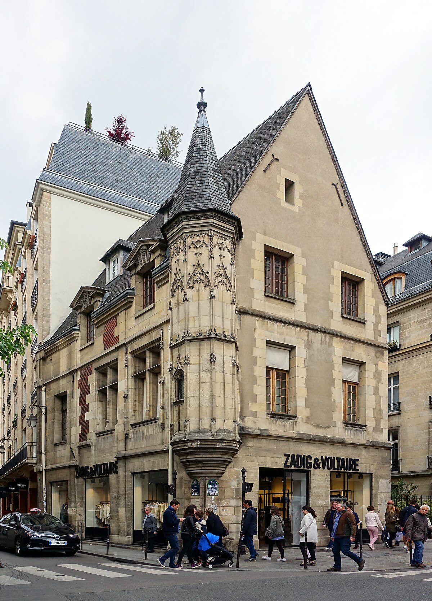
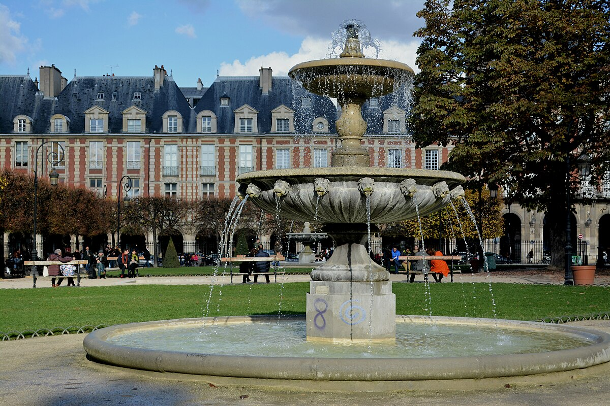
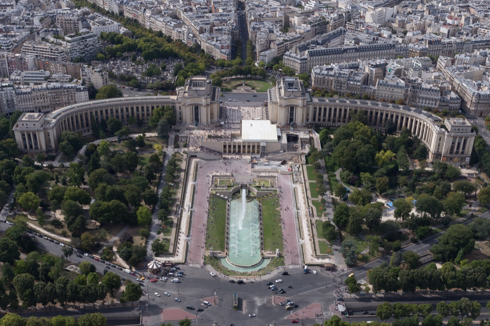
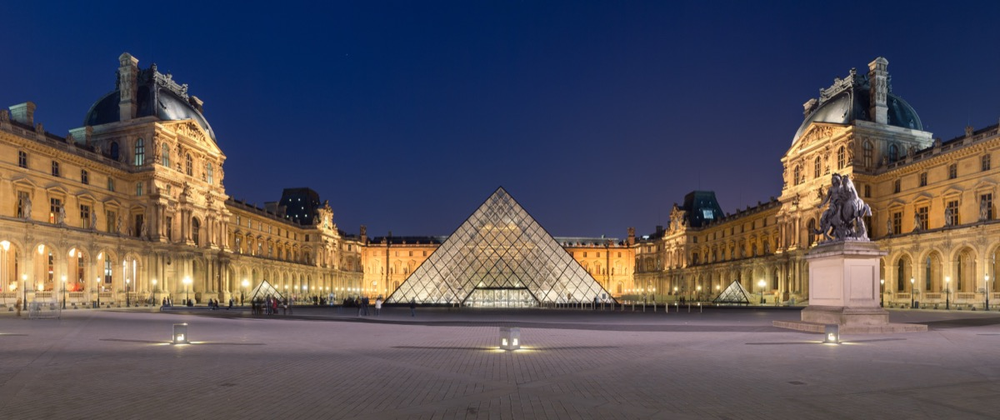
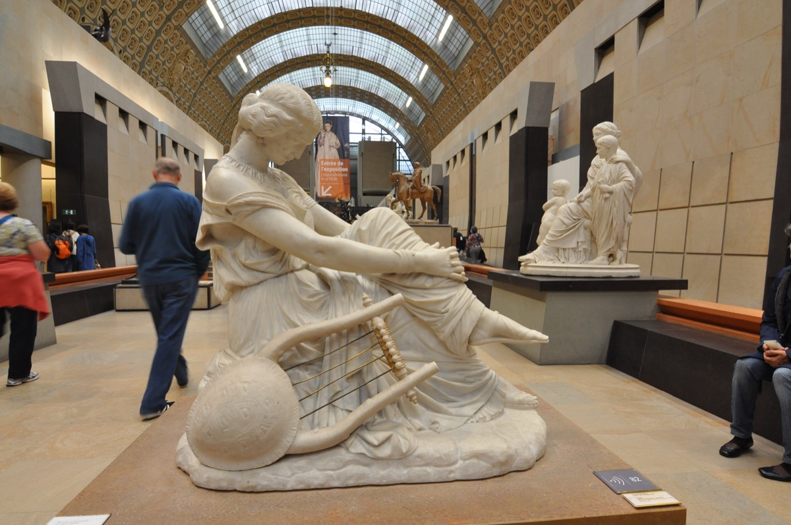
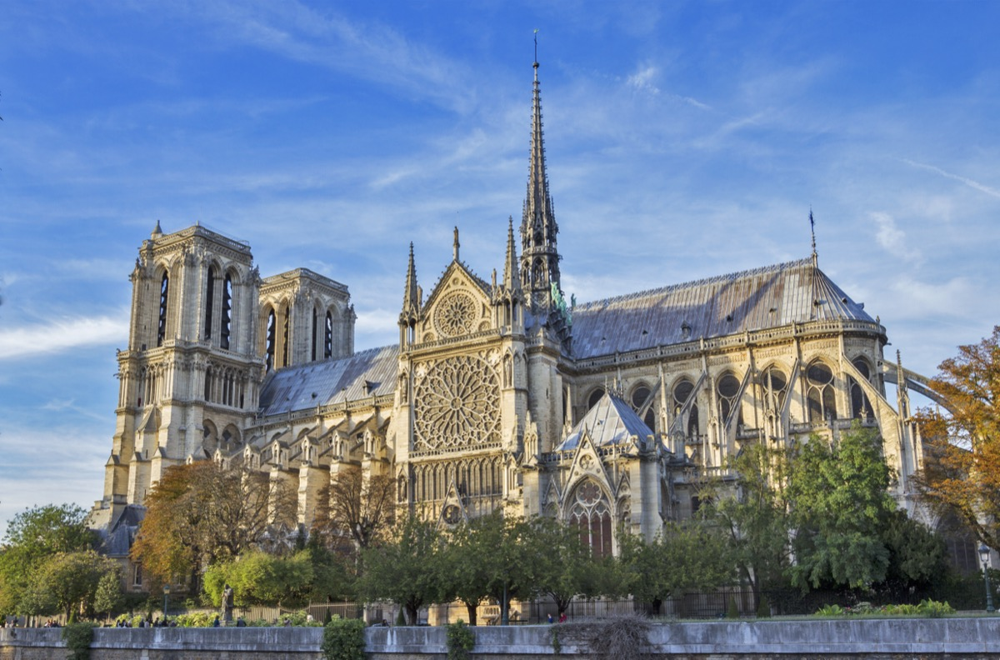
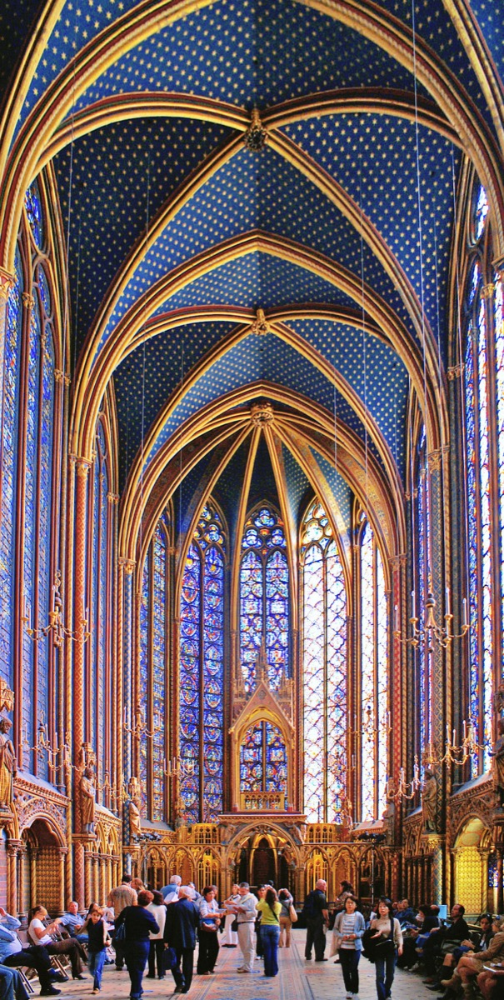
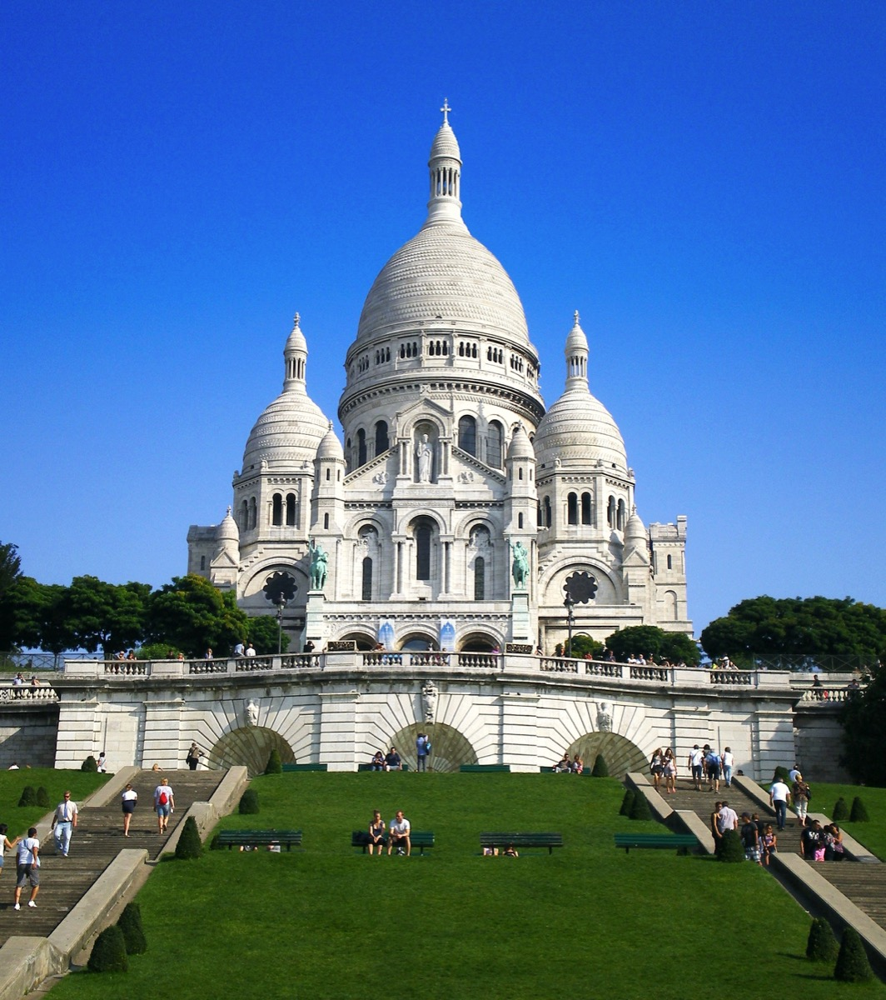
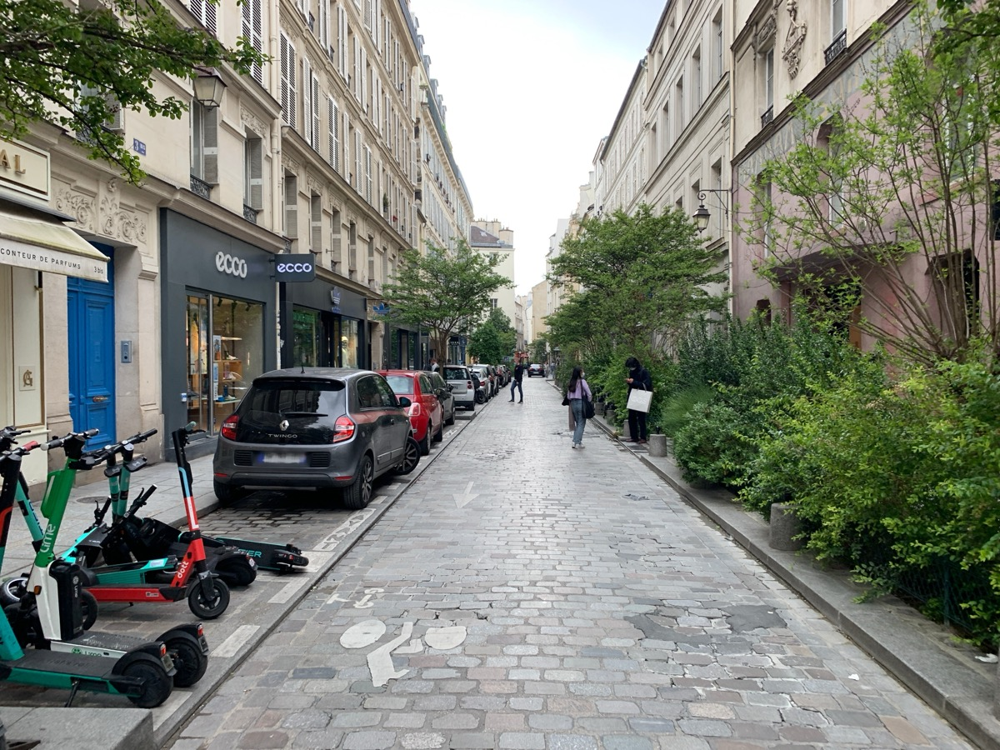
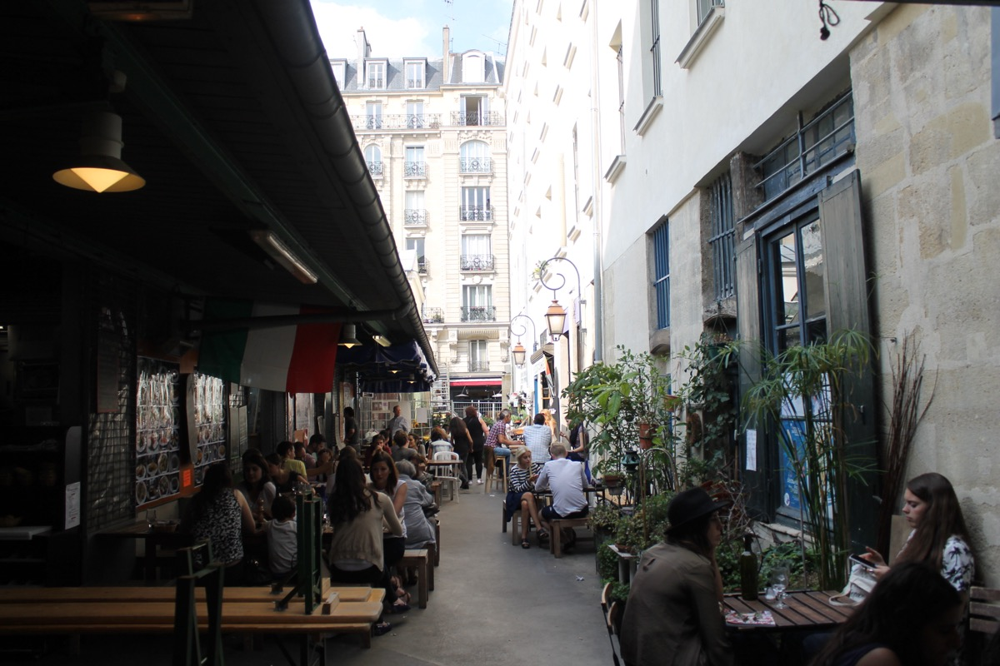

Where we're staying
Le Marais
One of Paris's most distinctive neighborhoods, spanning the 3rd and 4th arrondissements on the Right Bank. Medieval streets lined with grand hôtels particuliers, world-class galleries, and some of the city's best food. The Jewish Quarter, the elegant Place des Vosges — Paris's oldest planned square — and a vibrant café culture, all within walking distance.
Place des Vosges
Paris's oldest planned square, right on the doorstep. Elegant 17th-century arcades surround formal gardens on all four sides. Perfect for a first evening walk after checking in.
Eiffel Tower
Go at sunset or after dark when the tower lights up. Book tickets online well in advance — the queues without them can be hours long.

Trocadéro
The esplanade directly across the Seine from the tower. The most iconic view in Paris. Best at dusk when the light softens.
The Louvre
The world's largest art museum. You won't see everything — pick two or three wings and go deep. The Richelieu Wing is often less crowded than the sections near the Mona Lisa.
Musée d'Orsay
Housed in a former railway station, this is the world's greatest collection of Impressionist art. Monet, Renoir, Degas, Van Gogh — all under one roof.
Notre-Dame
The Gothic cathedral on Île de la Cité has just reopened after five years of restoration following the 2019 fire. One of the most significant buildings in the world, and worth seeing again.
Sainte-Chapelle
A 13th-century Gothic chapel a few steps from Notre-Dame. Fifteen floor-to-ceiling stained glass windows that fill the upper chapel with color. One of the most beautiful interiors in Europe.
Montmartre
The hilltop village in the 18th arrondissement. Sacré-Cœur at the top, cobblestone streets and artists' squares below. Go in the morning before the tour groups arrive.
L'As du Fallafel
The most famous falafel in Paris, on Rue des Rosiers in Le Marais. A neighborhood institution. Go for lunch — the queue moves fast.
Marché des Enfants Rouges
The oldest covered market in Paris, dating to 1615. A five-minute walk from Le Marais. Stalls from a dozen cuisines — perfect for a slow breakfast or an easy lunch.
Photos via Wikimedia Commons. Le Marais © Guilhem Vellut CC BY 2.0 · Place des Vosges © Carl Campbell CC BY 2.0 · Eiffel Tower © Yann Caradec CC BY-SA 2.0 · Trocadéro © Mbzt CC BY 3.0 · Louvre © Benh LIEU SONG CC BY-SA 3.0 · Musée d'Orsay © Moonik CC BY-SA 3.0 · Notre-Dame © Bibi Saint-Pol CC BY-SA 3.0 · Sainte-Chapelle © Didier B CC BY-SA 3.0 · Sacré-Cœur © Tonchino CC BY-SA 3.0 · Rue des Rosiers © Mbzt CC BY 3.0 · Marché des Enfants Rouges © Mbzt CC BY 3.0